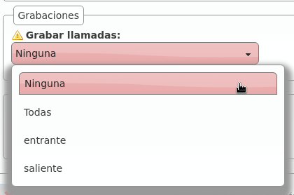
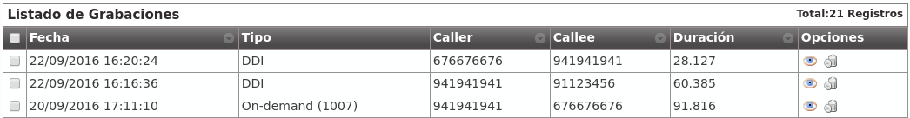
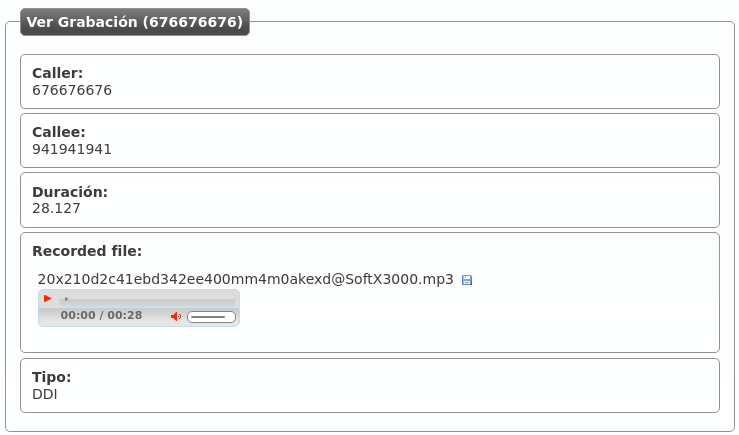

Grabación de llamadas¶
Atención
Tenga en cuenta que la legislación local le puede requerir que anuncie que la llamada esta siendo grabada (en ocasiones a ambos participantes). Debería incluir un aviso en las locuciones de bienvenida para los DDI que tengan grabación automática habilitada.
IvozProvider permite grabar las llamadas que se cursan en 2 modalidades distintas:
Grabación automática para llamadas desde/hacia cierto DDI externo.
Grabación bajo demanda solicitada por un usuario en medio de una conversación.
Grabación automática por DDI¶
En el caso de grabaciones automáticas por DDI, se graba toda la conversación: desde el principio hasta el final.
Se distinguen 2 casos:
Llamadas entrantes a un DDI: la grabación seguirá mientras la parte externa de la llamada permanezca en la conversación.
Llamadas salientes utilizando un DDI como DDI saliente: mientras el interlocutor externo permanezca en la conversación, la grabación sigue.
Atención
El hecho de que mientras el interlocutor permanezca en llamada la grabación continúe, hace que no importe cuántes veces se transfiera la llamada de un usuario a otro, la grabación contendrá toda la conversación (desde el punto de vista del participante externo).
Grabar todas las llamadas de un DDI
Basta con editar el DDI en cuestión y habilitar las grabaciones:
Existen 4 opciones:
Desactivar la grabación
Activarla para llamadas entrantes a dicho DDI
Activarla para llamadas salientes que presente dicho DDI
Activarla para ambas
Grabación bajo demanda¶
La grabación bajo demanda u on-demand la tiene que activar el operador de marca para las empresas que la necesiten, sin más que editar su empresa y configurar el código deseado:

Advertencia
A diferencia de los Servicios comentado en la sección anterior, la funcionalidad de grabación bajo demanda se activa en mitad de una conversación.
Al contrario que las grabaciones automáticas, las realizadas bajo demanda pueden detenerse empleando el mismo proceso que las ha iniciado.
Activación por medio de tecla Record¶
Los terminales Yealink soportan el envío de mensajes SIP INFO con una cabecera Record (ver referencia). No es un estándar, pero al ser Yealink uno de los modelos soportados, IvozProvider incluye soporte para la activación de grabación bajo demanda de esta forma.
Importante
El código seleccionado no influye en este caso, pero la empresa sí que tiene que tener las grabaciones bajo demanda activadas.
La activación de las grabaciones es muy simple en este caso, basta con pulsar la tecla y el sistema inicia la grabación.
Activación por códigos DTMF¶
Comúnmente este tipo de funcionalidades se activan introduciendo una combinación de teclas durante la llamada. Se inicia el proceso después de algún tipo de notificación. Esta combinación es enviada empleando tonos DTMF empleando el mismo flujo de audio que la conversación (como se menciona en el RFC 4733).
IvozProvider soporta este tipo de activaciones bajo demanda pero con una importante pega. Para poder capturar estos códigos, la pbx debe procesar los paquetes de audio de la conversación, evitando así la posible liberación del flujo entre los agentes finales.
Importante
Habilitar este modo afecta en gran medida el rendimiento de la plataforma. Úselo bajo su propio riesgo.
Activación por medio de transferencia ciega frustrada¶
Existe otra forma de acceder a esta funcionalidad para los terminales que no tengan soporte para el método anterior.
Peligro
Este método de acceder a la funcionalidad es una forma imaginativa de hacerla accesible para terminales sin soporte nativo de tecla Record que es el método recomendado). En función del terminal en cuestión y de la configuración del mismo, resultará más o menos cómodo utilizar la funcionalidad (tecla rápida de transferencia ciega, no retener al interlocutor, etc.).
Los pasos a seguir en este método alternativo e imaginativo son los siguientes:
No se activa marcando el código en medio de la conversación.
Se activa iniciando una transferencia ciega al código configurado.
El sistema rechazará la transferencia e iniciará la grabación.
El usuario podrá volver a la conversación que tenía (si es que su terminal no ha vuelto solo) y seguir hablando.
¿Por qué esta forma tan peculiar de activar la grabación y no por medio de tonos normales?
El motivo de activar la grabación por medio de una transferencia ciega frustrada se debe a la Arquitectura general de la plataforma y, más concretamente, al flujo de audio RTP.
Listado de grabaciones¶
El administrador de empresa puede acceder a las grabaciones realizadas por medio de la sección Configuración de Empresa > Grabaciones:
Haciendo clic en una de ellas, podría escucharla desde la web o descargársela en formato MP3:
En el caso de una grabación bajo demanda, se indica qué usuario la inició: